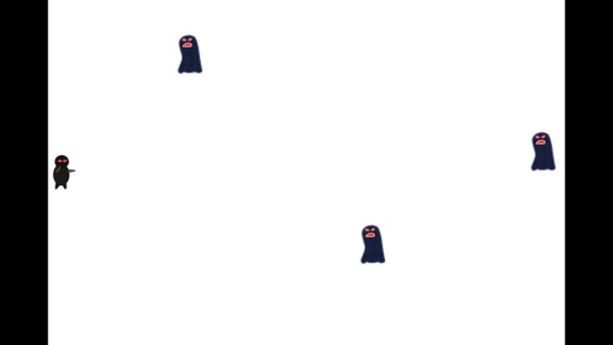

We have added a hero to the scene in the last chapter Chapter 2 - How to Add a sprite. But the hero is so lonely that we should add some enemies to let him beat down. The function void addTarget() will complete the work, the enemies will be added into the scene from right to left at random speed.
Declare void addTarget() in HelloWorldScene.h and add the following code to HelloWorldScene.cpp, (and don't forget to add using namespace cocos2d; at the start of HelloWorldScene.cpp)
// cpp with cocos2d-x
void HelloWorld::addTarget()
{
CCSprite *target = CCSprite::spriteWithFile("Target.png",
CCRectMake(0,0,27,40) );
// Determine where to spawn the target along the Y axis
CCSize winSize = CCDirector::sharedDirector()->getWinSize();
int minY = target->getContentSize().height/2;
int maxY = winSize.height
- target->getContentSize().height/2;
int rangeY = maxY - minY;
// srand( TimGetTicks() );
int actualY = ( rand() % rangeY ) + minY;
// Create the target slightly off-screen along the right edge,
// and along a random position along the Y axis as calculated
target->setPosition(
ccp(winSize.width + (target->getContentSize().width/2),
actualY) );
this->addChild(target);
// Determine speed of the target
int minDuration = (int)2.0;
int maxDuration = (int)4.0;
int rangeDuration = maxDuration - minDuration;
// srand( TimGetTicks() );
int actualDuration = ( rand() % rangeDuration )
+ minDuration;
// Create the actions
CCFiniteTimeAction* actionMove =
CCMoveTo::actionWithDuration( (ccTime)actualDuration,
ccp(0 - target->getContentSize().width/2, actualY) );
CCFiniteTimeAction* actionMoveDone =
CCCallFuncN::actionWithTarget( this,
callfuncN_selector(HelloWorld::spriteMoveFinished));
target->runAction( CCSequence::actions(actionMove,
actionMoveDone, NULL) );
}
Here, callfuncN_selector(HelloWorld::spriteMoveFinished) backcalls the function spriteMoveFinished(), we need to declare it in the HelloWorldScene.h and define it as follows,
// cpp with cocos2d-x
void HelloWorld::spriteMoveFinished(CCNode* sender)
{
CCSprite *sprite = (CCSprite *)sender;
this->removeChild(sprite, true);
}
Tips
The callback function but it is a little complicated to implement in cpp, you could refer to the declarations in cocos2dx\include\selector\_protocol.h. There are five different callback types:
How to use them is according to the callback function definition. For example, when use the function CCTimer::initWithTarget whose second parameter is a type of SEL_SCHEDULE, we could find its macro-definition schedule_selector(_SELECTOR) in selector_protocol.h, then we declare a callback function void MyClass::MyCallbackFuncName(ccTime), and transform it as the second parameter of CCTimer::initWithTarget.
Then, we should put the enemies into the scene at intervals, add the codes before init() function returns.
// cpp with cocos2d-x
// Call game logic about every second
this->schedule( schedule_selector(HelloWorld::gameLogic), 1.0 );
Ok, everything is done, build and run, and enjoy your fruit.
